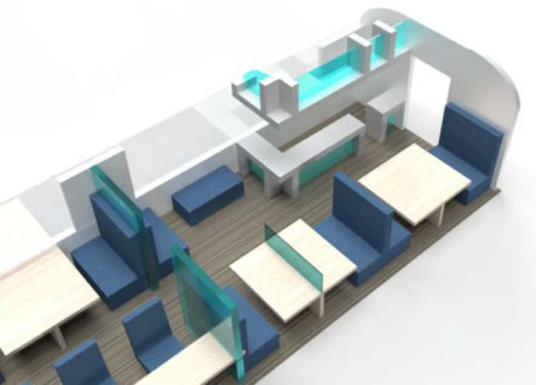
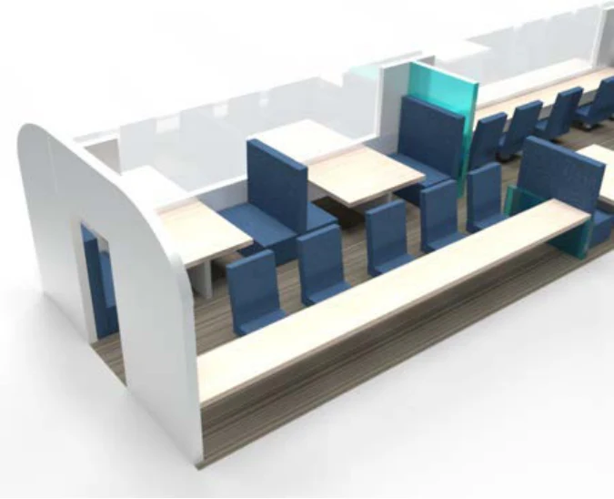
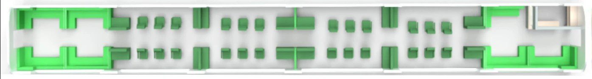
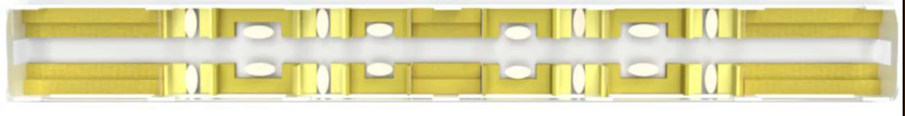

08 / Mobility & interiors
The Multi Coach Interior
A three-coach interior concept for NS intercity trains, matching distinct passenger needs with dedicated Work, Relax and Social environments.

One train, different needs
A uniform carriage asks passengers with conflicting needs to share the same environment. Our team explored an alternative in which working, relaxing and socialising each receive a space designed around their specific requirements, with accessibility considered across the concept.

Work and relaxation
The Work Coach combines separated study spaces, outward-facing seating, power outlets and a coffee bar to support concentration and autonomy. The Relax Coach offers sofas, couches and adjustable individual seats, alongside tables and charging points, to support physical and mental comfort.

Space to connect
The Social Coach uses group seating in different sizes to accommodate conversation and shared travel. Separating these activities from quieter spaces is intended to reduce conflicts between passengers. Together, the three interiors form a design proposal for a more differentiated journey, rather than an implemented NS service.
